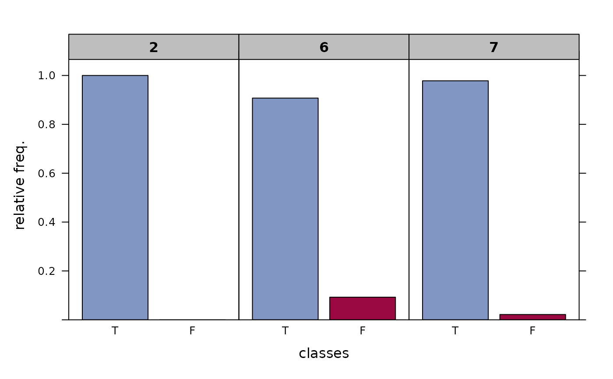

Return the frequencies of correct and wrong classifications in given node(s) in tabular form. The 'purity', denoting the relative frequency of correctly classified elements, is a useful information for the interpretation of regression and classification trees and a measure for its quality.
Usage
LeafRates(x)
# S3 method for class 'LeafRates'
plot(x, col = NULL, which = c("rel", "abs"),
layout = NULL, ylim = NULL, ...)
Arguments
- x
fitted model object of class rpart.
- col
color for the bars in the plot
- which
one out of "rel" or "abs", denoting whether relative or absolute frequencies should be used for the plot.
- layout
vector defining the layout
- ylim
the y limits of the plot.
- ...
further arguments (not used).
Details
The result comprises absolute and relative frequencies per leaf.
Value
A list with 5 elements consisting of:
- node
the node id (of the leaf)
- freq
the absolute frequency of correct and wrong classifications
- p.row
the relative frequency of correct and wrong classifications
- mfreq
the total number of cases
- mperc
the percentage of the sample in the leaf
Author
Andri Signorell <andri@signorell.net>
Examples
r.rp <- FitMod(Species ~ ., data=iris, fitfn="rpart")
LeafRates(r.rp)
#> freq perc total
#> node right wrong right wrong abs perc
#>
#> 2 50 0 100.0% 0.0% 50 33.3%
#> 6 49 5 90.7% 9.3% 54 36.0%
#> 7 45 1 97.8% 2.2% 46 30.7%
plot(LeafRates(r.rp))
